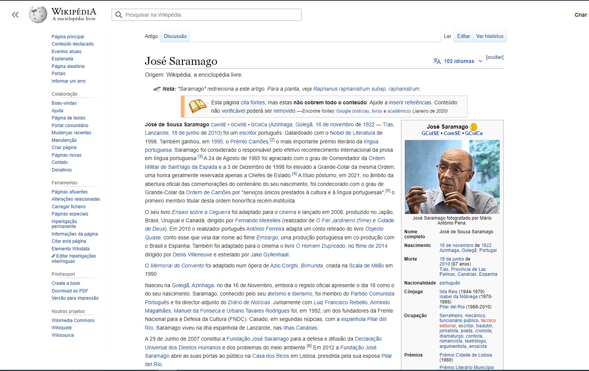
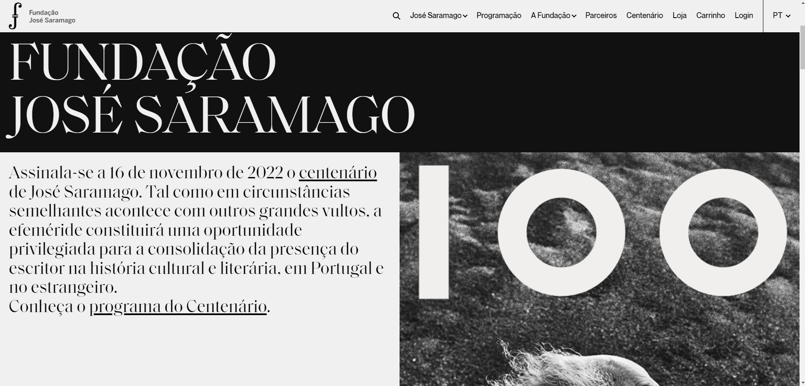
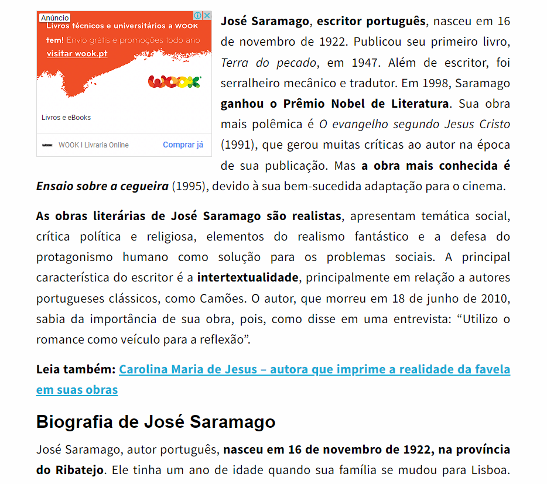
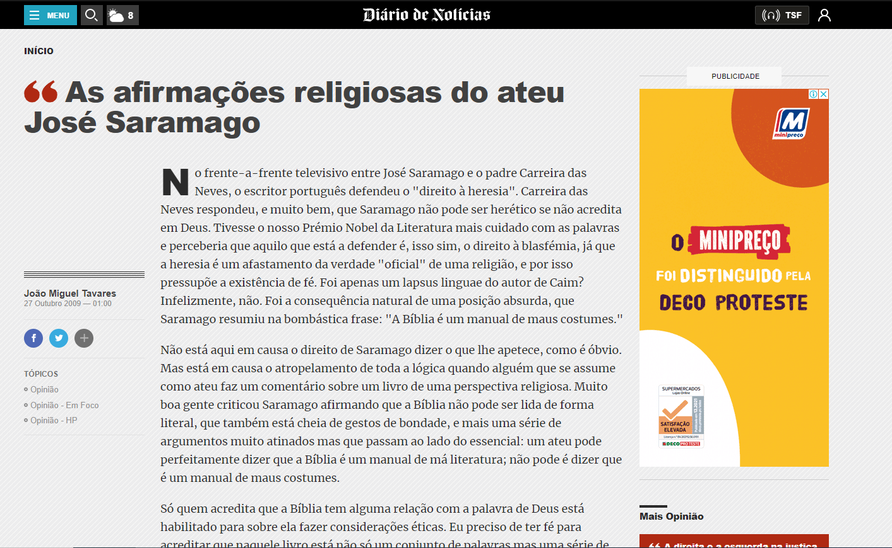

Na seguinte tabela encontra-se as 10 obras mais importanres e conhecidas do escritor José Saramago
| Outros Sites | Tipo de infórmação | ||
|---|---|---|---|
| Wikipédia | Tudo | ||
|  | |||
| Ebiografia | Biografia | ||
| Fundação José Saramago | Tudo | ||
|  | |||
| Português | Biografia / Obras | ||
|  | |||
| Diário de Notícias | Creças Religiosas | ||
|  | |||